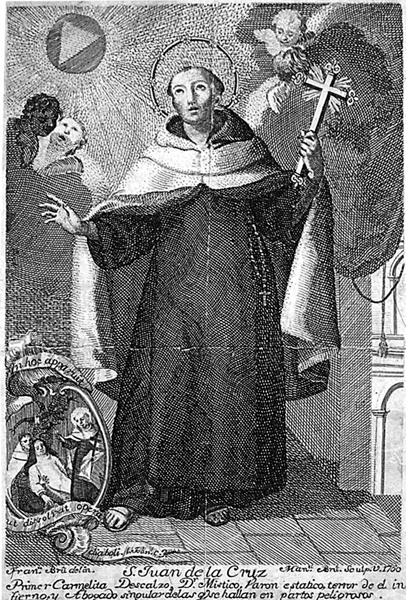

San Juan de la Cruz, Primer Carmelita Descalzo, Dr Místico, Varón estático, terror de el infierno, y Abogado singular de las que se hallan en partos peligrosos, 1760 por Francisco Bru [1733-1803] Col. Biblioteca Nacional de España
Considerado uno de los máximos renovadores del lenguaje poético, a Juan de Yepes y Álvarez, nacido en Fontiveros, la miseria lo obligó a ejercer múltiples oficios desde niño: plañidero en entierros, limosnero, sastre, carpintero, pintor, ayudante de enfermería. Con una subvención del hospital, logró estudiar donde los jesuitas en Medina del Campo entre 1559 y 1563. Inició la profesión religiosa bajo el nombre de Juan de Santo Matía en el convento de los carmelitas, ordenándose sacerdote en 1567, año de su primer encuentro con santa Teresa, quien lo invitó a colaborar en la reforma de la orden y fundación de nuevos conventos. Estudió en Salamanca, donde consolidó su fama de austeridad y espiritualidad, en éxtasis desconcertantes, exacerbados para sus condiscípulos. Perseguido en 1877 por los Calzados, pasó nueve meses en una celda en Toledo, donde, se dice, imaginó su obra cumbre el Cántico o Cántico Espiritual. Conciente de la simbología hermética de sus textos, redactó tratados y comentarios como Subida al Monte Carmelo, Noche Oscura y Llama de amor viva, con los que intentó explicar el enigma de nombrar lo que no tiene nombre. Cuentan que la noche de su muerte pidió a sus hermanos de hábito que le leyeran el Cantar de los cantares, la luminosa fuente de donde brotó la inspiración para su “noche oscura del alma”.